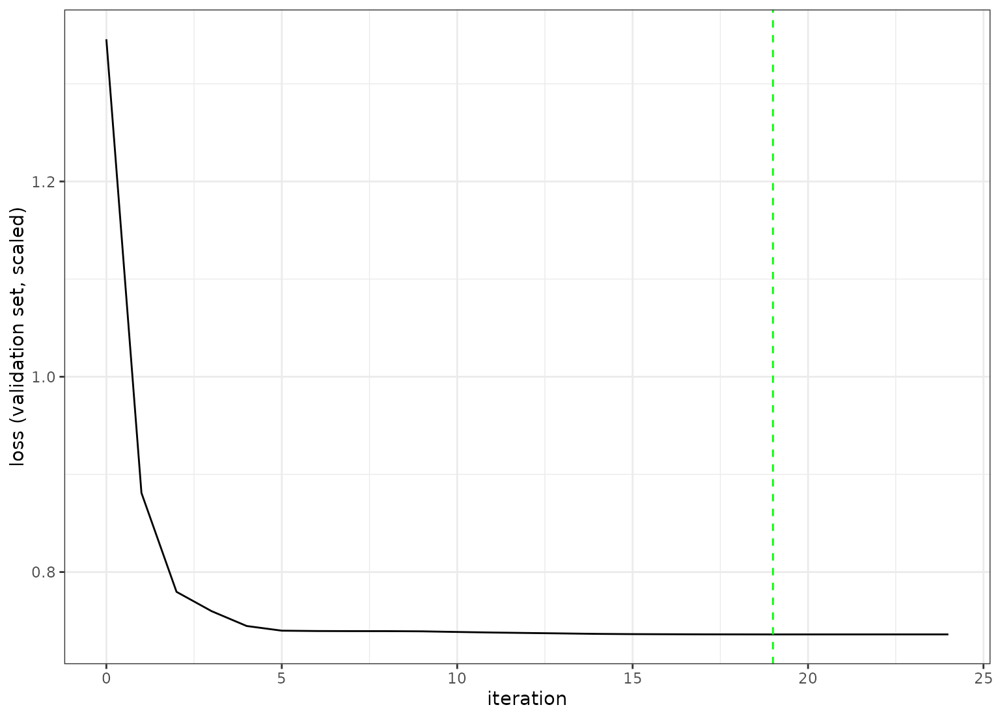

Plot model loss over epochs
Details
This function plots the loss function across the available epochs. A vertical line shows the epoch with the best loss value.
Examples
# \donttest{
if (torch::torch_is_installed() & rlang::is_installed(c("recipes", "yardstick", "modeldata"))) {
library(ggplot2)
library(recipes)
theme_set(theme_bw())
data(ames, package = "modeldata")
ames$Sale_Price <- log10(ames$Sale_Price)
set.seed(1)
in_train <- sample(1:nrow(ames), 2000)
ames_train <- ames[ in_train,]
ames_test <- ames[-in_train,]
ames_rec <-
recipe(Sale_Price ~ Longitude + Latitude, data = ames_train) |>
step_normalize(all_numeric_predictors())
set.seed(2)
fit <- brulee_mlp(ames_rec, data = ames_train, epochs = 50, batch_size = 32)
autoplot(fit)
}
#> Loading required package: dplyr
#>
#> Attaching package: ‘dplyr’
#> The following objects are masked from ‘package:stats’:
#>
#> filter, lag
#> The following objects are masked from ‘package:base’:
#>
#> intersect, setdiff, setequal, union
#>
#> Attaching package: ‘recipes’
#> The following object is masked from ‘package:stats’:
#>
#> step

# }